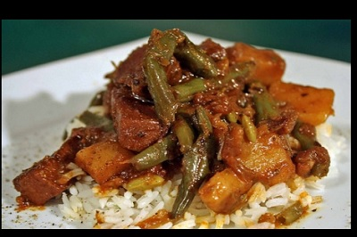

Qorbe Me Patate
INGREDIENTS
- boiled beef
- 1kg potatoes
- salt
- dry menderz
- 1 bay leaf

INTRUCTIONS
- We put the meat on a pan full of water.
- We prepare the potatoes by washing and peeling them . We also add some carrots
- Prepare some vegetables in a non-stick pan with a little oil ,until the have taken a very light brown color.
- Add some salt,pepper.
- Once the meat has been boied, put the vegetables in the pot ,and also add some watter and some bay leaf.
- Continue simmering until the potatoes are softened